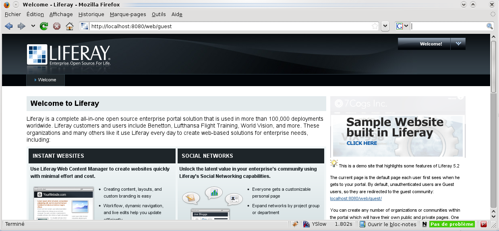
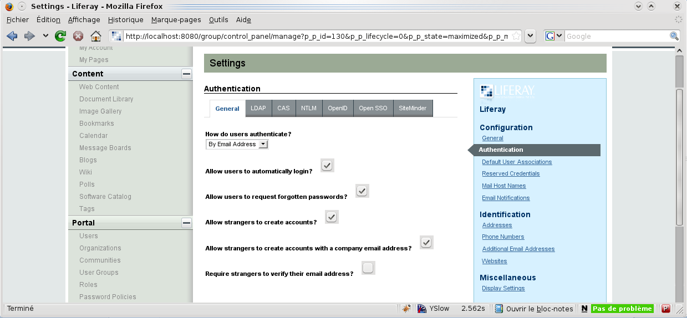

Liferay
Thanks to Sebastien BAHLOUL for this documentation.Presentation
Liferay is an entreprise portal. Liferay can use LemonLDAP::NG as an SSO provider but you have to manage how users are created:- By hand in Liferay administration screens
- Imported from an LDAP directory
Integration with LemonLDAP::NG
Liferay configuration
Access to Liferay (first time):
Login as administrator: Go to My Account:
Go to My Account:
 Go to Portal >
Settings:
Go to Portal >
Settings:
 Go to Configuration >
Authentication:
Go to Configuration >
Authentication:
 In "General", fill at least the following
information:
In "General", fill at least the following
information:
- How do users authenticate? by login

Then use the SiteMinder tab to configure SSO:- Enabled: Yes
- Import from LDAP: Yes (cf. presentation)
- User Header: Auth-User (case sensitive)
 Do not forget to save your changes!
Do not forget to save your changes!
LemonLDAP::NG configuration
Just add a virtualhost inside Manager:- Virtualhost: liferay.example.com
- HTTP Headers:
- Auth-User => $uid
- Rules:
- default => accept
- ^/c/portal/logout => logout_app_sso
- HTTP Headers:
<VirtualHost *>
ServerName liferay.example.com
ServerSignature Off
PerlHeaderParserHandler My::Package
<Proxy *>
Order deny,allow
Allow from all
</Proxy>
ProxyPreserveHost On
ProxyPass / http://liferayIP:8080/
ProxyPassReverse / http://liferayIP:8080/
LogLevel warn
ErrorLog /var/log/httpd/liferay-error.log
CustomLog /var/log/httpd/liferay-access.log combined
</VirtualHost>